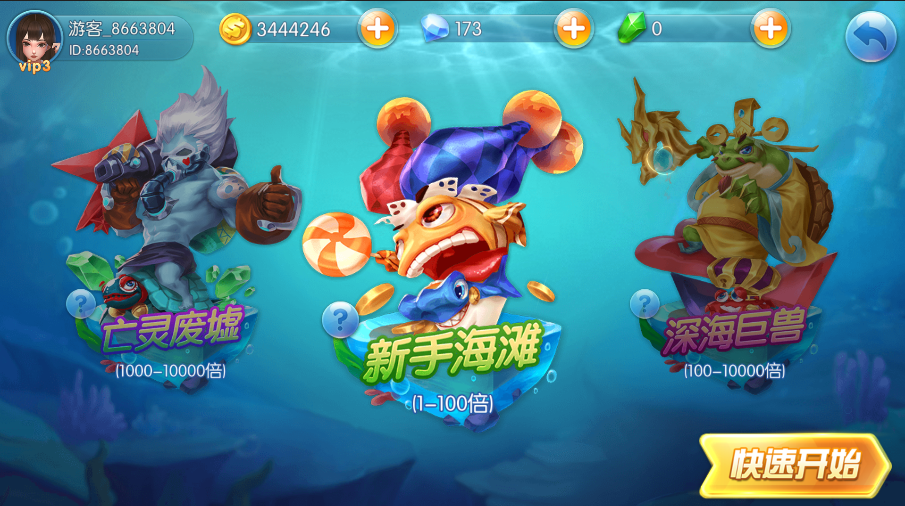
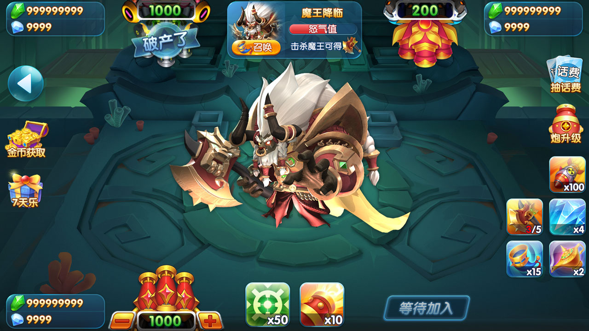

街機捕魚遊戲
展示經典模式、多人比賽、玉石場、海魔來襲以及房間與炮台等 OceanRaid 產品場景。
玩法場景
- 經典模式：海妖漩渦、新手灘、深海巨獸和幽靈船長
- 比賽模式：多人競技、賽事流程和排行榜
- 玉石場與多海域、Boss、生物和炮台資源
- 小遊戲入口及擴充休閒玩法



玩法名稱、倍率、獎勵與可用模組以實際版本及當地法律要求為準。
展示經典模式、多人比賽、玉石場、海魔來襲以及房間與炮台等 OceanRaid 產品場景。


玩法名稱、倍率、獎勵與可用模組以實際版本及當地法律要求為準。